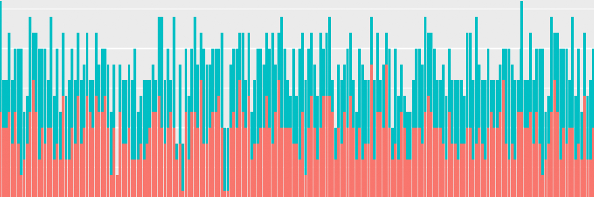
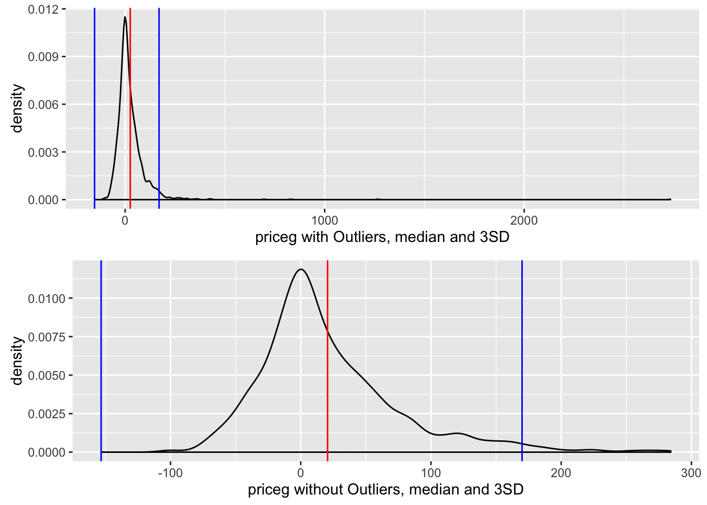
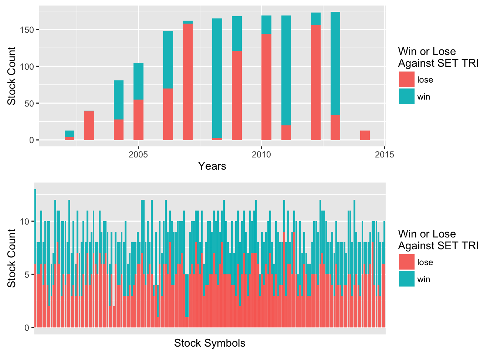
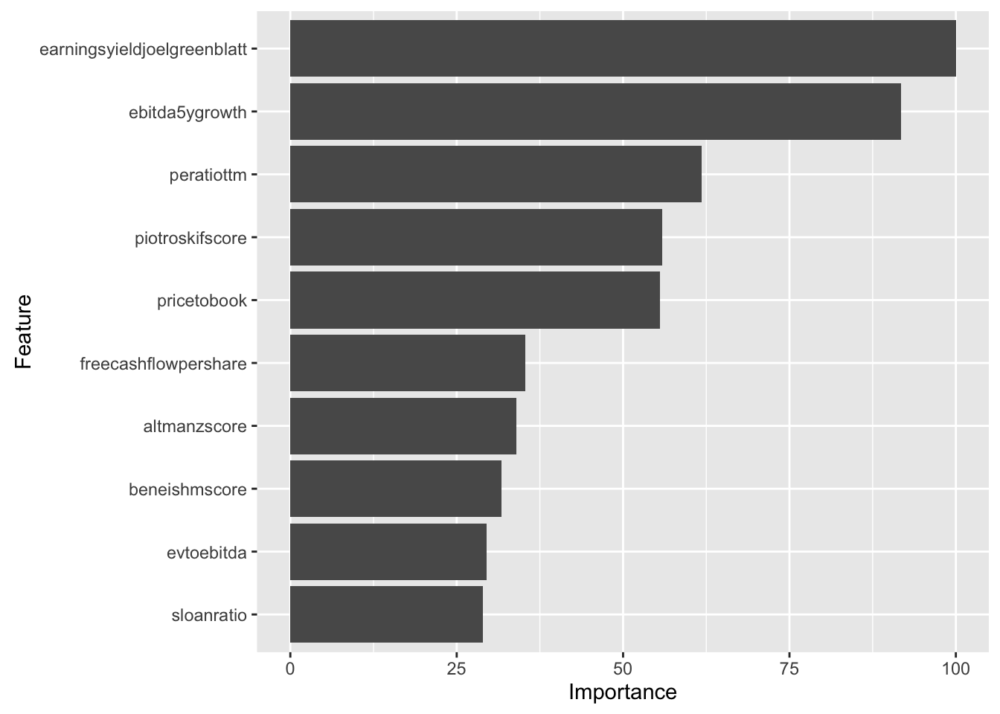
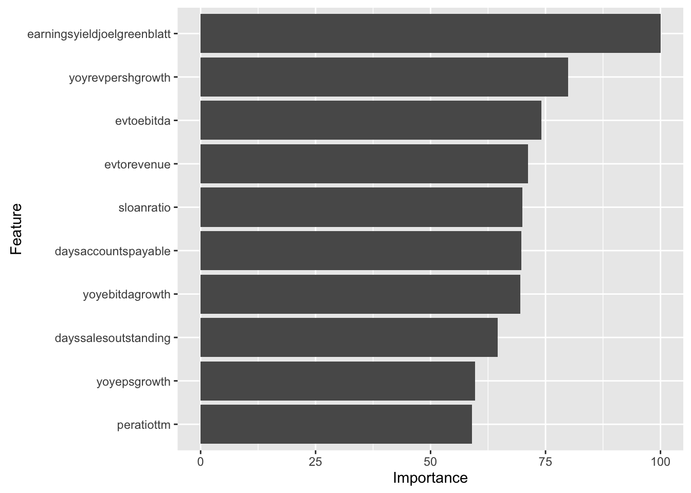

Sample project
We set out to find whether value investing strategy such as Joel Greenblatt's earning yields and Piotroski's F-score can actually beat the Thai stock market. The fundamental data are obtained from Morningstar while the benchmark SET TRI is obtained from Stock Exchange of Thailand. We perform support vector machine, boosted logistic regression and random forest classification based on the data, as well as a backtest to verify the models. Most our models perform better than a coin toss with random forest achieving the highest accuracy and sensitivity of 85.13% and 79.25% respectively (20.08% annual return).
Attach necessary R packages and set seed for reproduciblity.
|
#plotting |
Read and subset the data containing valuation ratios, valuation and quality indicators, common size ratios, and per share data. These variables are the go-to components of various value investing strategies such as Joel Greenblatt’s Magic Numbers, Peter Lynch’s fair value, Piotroski F-score, and other fundamental criteria. For more information on variables included, see the codebook. We only get those with complete cases due to requirement of the analysis.
|
#Read dataset |
The price growth variable priceg is skewed to the right; that is, we tend to have extreme positive price growth as large as 2,733%. Since events outside the scope of value investing strategies, such as transitioning from one industry to another, merger and acquisition or even share splitting mistakes, might cause these extreme values, we decide to remove outliers beyond median plus/minus three standard deviations (12 observations were removed).
|
#Central values with outliers |
We create the winloss variable as a binary dependent variable of if the stock win or lose against the market.
|
#Create winloss variable as dependent |
This result in a dataset of 73 variables and 1,580 observations.

We treat observations as cross-sectional rather than panel data. This makes our learners perform screening similar to what value investing strategies do based on one-year windows of annual data. The merit is that we can rely on powerful predicting algorithms such as random forest, but the downside is that we must assume random effects of year and individual stocks. We can see the data is fairly distributed by years and stock symbols.
|
#Year spread |

We prepare randomly training and testing sets at 60/40 ratio. This results in 948 observations in training set and 632 observations in testing set. We also removed variables associated with year indicator, symbols, SET TRI return and price growth since it interferes with the training. The models used are support vector machine, boosted logistic regression, random forest and neural networks. Also leave backtest data frame for backtesting.
|
#Leave a dataset for backtesting |
We use c-classification support vector machine with linear kernel and gamma of 1/68.
|
fit<-svm(winloss~.,data=training, type='C',kernel='linear')
Testing reveals out-of-sample 64.72% accuracy. We also get 64.14% out-of-sample precision, meaning 64.14% of
stocks we labelled as market beaters are actually so.
|
Following this classifier will give an average return (%) of:
|
mean(backtest[backtest$winloss==pred & pred=='win',]$priceg) |
The boosted logit with 150 iterations and step-size reduction of 0.1 with 25 repetitions of bootstrap cross-validation.
|
fit<-train(winloss~.,data=training, method='gbm') |
64 out of 68 features have an influence on the dependent variable. The variable importance of top-ten most influential variables are shown below.
|
ggplot(varImp(fit),top=10) |

This gives a slightly inferior out-of-sample accuracy of 63.13% and a little better precision of 65.64% respectively.
|
pred<-predict(fit,newdata=testing) |
Following this classifier will give an average return (%) of:
|
mean(backtest[backtest$winloss==pred & pred=='win',]$priceg) |
We grow 500 classification trees with 25 repetitions of bootstrap cross-validation. The cutoff for voting is 50%.
|
fit<-train(winloss~.,data=training, method='rf') |
The variable importance of top-ten most influential variables are shown below.
|
ggplot(varImp(fit),top=10) |

This gives the best result so far with 85.13% accuracy and 87.59% precision.
|
pred<-predict(fit,newdata=testing) |
Following this classifier will give an average return (%) of:
|
mean(backtest[backtest$winloss==pred & pred=='win',]$priceg) |
The winloss variable has to be converted to 1 (win) and 0 (lose) for the training and testing sets. Formula is created using all variables in the training set.
|
training$winloss<-ifelse(training$winloss=='win',1,0) |
We use 2 hidden layers with 7 neurons each layer. This is derived by the rule of thump of no.of samples in training set/2*(degree of freedom). The threshold is 0.01, training for 8 times. The algorithm is resilient backpropagation with weight backtracking.
|
fit<-neuralnet(fol,data=training,hidden=c(7,7),rep=10) |
The plot below shows our neural network.
|
plot.nn(fit,rep='best') |
This gives the accuracy of 51.11% and precision of 47.19%. This is considerably worse than other learners.
|
covariate_df <-testing[-69] |
Following this classifier will give an average return (%) of:
|
pred<-ifelse(pred==1,'win','lose') |
All our models has a better than random accuracy and precision. They are also shown to perform reasonably in
the backtest (65.59%, 65.73%, 58.05% and 61.78% respectively). Random forest has the highest accuracy and precision;
nonetheless it performs worse than other learners in the backtest. This is because our models have several
limitations:
We predict if a stock ‘beats the market’ but not ‘by how much’ so the discrepancy in accuracy/precision and backtest
performances between random forest and svm.
We assume random effects among years and stocks and treat which might not necessarily hold.
We treat the dataset as cross-sectional not panel as it naturally is.
We exclude some data because of NAs.
One of the most noteworthy point is that according to variable importance, traditional value
strategy indicators such as Joel Greenblatt’s earning yields and Piotroski’s F-score appear to be
significant. Value investing does make sense in Thai market.
BACK